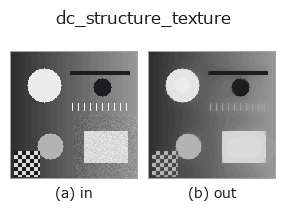

decomposition op• Data kinds: image → image
• Call: fullseye.apply(img, "dc_structure_texture", a=0.5, b=0.5) (the 2-D model is one image plus two scalar knobs a,b∈[0,1])

*The figure is the actual output on a synthetic 128×128 input. Left: input, right: output. Point clouds are drawn as a top-down scatter (brightness = z), 1-D series as a line plot, volumes as the maximum-intensity projection along z, videos as the middle frame, complex images as magnitude; return values that are not pictures are shown as the values themselves.*
*The output is shown in a viridis-like pseudo-colour (dark purple = low, yellow = high) so that a field of quantities — distance, phase, orientation, depth — can be read.*
Sweeping knob a (0.1 / 0.5 / 0.9, the other knob at its default):
▸ dc_structure_texture: knob a sweep (docs site)
*Knob b does not change the output (measured: identical at 0.1 / 0.5 / 0.9).*
On other images (synthetic scene / photo / coins. Top row: inputs, bottom row: their outputs. Knobs at default):
▸ dc_structure_texture: other inputs (docs site)
*The 4th column is a colour (H,W,3) input. This op handles colour without crossing channels (it does not convolve the colour channel as a third spatial axis).*
Structure / cartoon part of the image (TV-L2, Chambolle).
Splits the image into "structure (cartoon) + texture" and returns the structure part. The ROF/TV-L2 model min_u ||u - f||^2 / (2*weight) + TV(u) is solved with Chambolle's (2004) dual projection method for a fixed 120 iterations (tau=0.125). With weight = 0.02 + 0.28*a, the larger a, the smoother (flat patches spread and fine patterns disappear); even at a=0 a very weak smoothing is applied. b is unused.
The input is brought to 2-D float64 in [0,1] (3-D is channel-averaged, NaN→0, ±Inf→1/0). Returns float64 of the same shape as the input, clipped to [0,1]. Unless saturated, dc_structure_texture + (dc_texture_residual - 0.5) == input holds. Tiny images such as 1xN / Nx1, where a 2-D divergence cannot be defined, return the input unchanged (structure = input, texture = 0.5). On exception it is fail-soft: a clipped version of the input is returned and recorded in the backend_safe ledger (re-raised in strict mode).
Unlike Gaussian blur it preserves edges (steps) and drops only patterns and noise. Because the number of iterations is fixed, it may not fully converge on large images (the remainder shows up in the texture part). If you only want the texture part, use dc_texture_residual. Use it as preprocessing for removing periodic patterns or for defect detection, followed by threshold or dyn_threshold. If the background is low-rank (stripes, gradients), dc_rpca_lowrank is also a candidate.
• gallery2d_texture_freq family guide
• blas_threads_and_memory — Why matrix decompositions are slow — BLAS threads, caches, memory layout
• Sample-data catalog (download URLs / licences) — 2-D uses skimage.data (BSD/public domain) plus synthetic images; 3-D lists download URLs for real data sources (Stanford, PDS, …).
• Operator provenance and references — the sources of the research/methods this op family came from.
• The canonical algorithm (author, year) and its uses are named in the family usage guide above.
The program below has been verified to run (same input as the figure). In Studio's help this block becomes buttons that load and run it on the spot.
dc_structure_texture 0.50 0.50
▸ Load this pipeline · Load & run
• gallery2d_texture_freq — py -3.11 examples/gallery2d_texture_freq.py
• poc_fiber_orientation — py -3.11 examples/poc_fiber_orientation.py
image as input)identity · gaussian · mean_box · bilateral · unsharp · median · min_filter · max_filter
decomposition)dc_texture_residual · dc_rpca_lowrank · dc_rpca_sparse · dc_retinex · dc_local_contrast_norm · dc_homomorphic
*Provenance: ops.py — 2D operator registry. This per-op note is generated by tools/opdocs.py md (do not hand-edit).*
© 2026 Kazufumi Furuse — Fullseye operator documentation. Licensed under Apache-2.0.